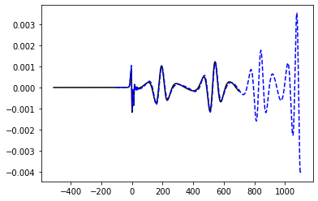
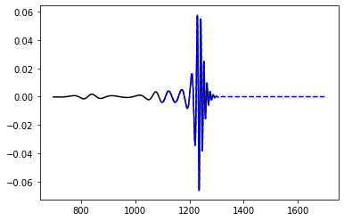
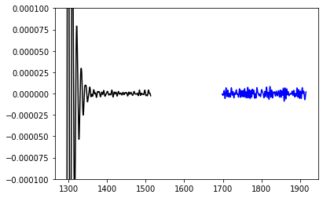

[1]:
import h5py
import glob
path = "/Volumes/simulations/BBH001/output-????/BBH001/"
fn = glob.glob(path+"mp_[Pp]si4.h5")
fn
[1]:
['/Volumes/simulations/BBH001/output-0000/BBH001/mp_psi4.h5',
'/Volumes/simulations/BBH001/output-0001/BBH001/mp_psi4.h5',
'/Volumes/simulations/BBH001/output-0002/BBH001/mp_psi4.h5',
'/Volumes/simulations/BBH001/output-0003/BBH001/mp_psi4.h5',
'/Volumes/simulations/BBH001/output-0004/BBH001/mp_psi4.h5']
[2]:
import math
def joinDsets(dsets):
"""joints multiple datasets which each have a
time like first column, eg iteration number of
time. Removes overlapping segments, keeping the
last segment.
dsets = iterable of 2d array like objects with data"""
# joins multiple datasets of which the first column is assumed to be "time"
if(not dsets):
return None
length = 0
for d in dsets:
length += len(d)
newshape = list(dsets[0].shape)
newshape[0] = length
dset = np.empty(shape=newshape, dtype=dsets[0].dtype)
usedlength = 0
for d in dsets:
insertpointidx = np.where(dset[0:usedlength,0] >= d[0,0])
if(insertpointidx[0].size):
insertpoint = insertpointidx[0][0]
else:
insertpoint = usedlength
newlength = insertpoint+len(d)
dset[insertpoint:newlength] = d
usedlength = newlength
return dset[0:usedlength]
def loadHDF5Series(nameglob, series):
"""load HDF5 timeseries data and concatenate the content of multiple files
nameglob = a shell glob that matches all files to be loaded,
files are sorted alphabetically
series = HDF5 dataset name of dataset to load from files"""
dsets = list()
for fn in sorted(glob.glob(nameglob)):
fh = h5py.File(fn, "r")
dsets.append(fh[series])
return joinDsets(dsets)
def RadialToTortoise(r, M):
"""
Convert the radial coordinate to the tortoise coordinate
r = radial coordinate
M = ADMMass used to convert coordinate
return = tortoise coordinate value
"""
return r + 2. * M * math.log( r / (2. * M) - 1.)
[3]:
import re
import numpy as np
radii = set()
modes = set()
dsets = dict()
with h5py.File(fn[0], "r") as fh:
for dset in fh:
m = re.match(r'l(\d*)_m(-?\d*)_r(\d*\.\d)', dset)
if m:
radius = float(m.group(3))
mode = (int(m.group(1)), int(m.group(2)))
modes.add(mode)
radii.add(radius)
dsets[(radius, mode)] = dset
mp_psi4_vars_500 = []
psi4dsetname_500 = dsets[(500, (2,2))]
mp_psi4_500 = loadHDF5Series("/Volumes/simulations/BBH001/output-0000/BBH001/mp_[Pp]si4.h5", psi4dsetname_500)
mp_psi4_vars_500.append(mp_psi4_500)
mp_psi4_vars_100 = []
psi4dsetname_100 = dsets[(100, (2,2))]
mp_psi4_100 = loadHDF5Series("/Volumes/simulations/BBH001/output-0000/BBH001/mp_[Pp]si4.h5", psi4dsetname_100)
mp_psi4_vars_100.append(mp_psi4_100)
[4]:
import matplotlib.pyplot as plt
fig = plt.figure()
ax = fig.add_subplot(111)
ax.plot(mp_psi4_500[:,0]-RadialToTortoise(500, 1),mp_psi4_500[:,1]*500,'k',label='Recent Run')
ax.plot(mp_psi4_100[:,0]-RadialToTortoise(100, 1),mp_psi4_100[:,1]*100,'b--',label='Recent Run')
# ax.set_xlim(1500,2000)
[4]:
[<matplotlib.lines.Line2D at 0x123364880>]

[5]:
radii = set()
modes = set()
dsets = dict()
with h5py.File(fn[2], "r") as fh:
for dset in fh:
m = re.match(r'l(\d*)_m(-?\d*)_r(\d*\.\d)', dset)
if m:
radius = float(m.group(3))
mode = (int(m.group(1)), int(m.group(2)))
modes.add(mode)
radii.add(radius)
dsets[(radius, mode)] = dset
mp_psi4_vars_500_a = []
psi4dsetname_500_a = dsets[(500, (2,2))]
mp_psi4_500_a = loadHDF5Series("/Volumes/simulations/BBH001/output-0003/BBH001/mp_[Pp]si4.h5", psi4dsetname_500_a)
mp_psi4_vars_500_a.append(mp_psi4_500_a)
mp_psi4_vars_100_a = []
psi4dsetname_100_a = dsets[(100, (2,2))]
mp_psi4_100_a = loadHDF5Series("/Volumes/simulations/BBH001/output-0003/BBH001/mp_[Pp]si4.h5", psi4dsetname_100_a)
mp_psi4_vars_100_a.append(mp_psi4_100_a)
[6]:
import matplotlib.pyplot as plt
fig = plt.figure()
ax = fig.add_subplot(111)
ax.plot(mp_psi4_500_a[:,0]-RadialToTortoise(500, 1),mp_psi4_500_a[:,1]*500,'k',label='Recent Run')
ax.plot(mp_psi4_100_a[:,0]-RadialToTortoise(100, 1),mp_psi4_100_a[:,1]*100,'b--',label='Recent Run')
# ax.set_xlim(1000,1350)
[6]:
[<matplotlib.lines.Line2D at 0x12345e5b0>]

[7]:
radii = set()
modes = set()
dsets = dict()
with h5py.File(fn[3], "r") as fh:
for dset in fh:
m = re.match(r'l(\d*)_m(-?\d*)_r(\d*\.\d)', dset)
if m:
radius = float(m.group(3))
mode = (int(m.group(1)), int(m.group(2)))
modes.add(mode)
radii.add(radius)
dsets[(radius, mode)] = dset
mp_psi4_vars_500_a = []
psi4dsetname_500_a = dsets[(500, (2,2))]
mp_psi4_500_a = loadHDF5Series("/Volumes/simulations/BBH001/output-0004/BBH001/mp_[Pp]si4.h5", psi4dsetname_500_a)
mp_psi4_vars_500_a.append(mp_psi4_500_a)
mp_psi4_vars_100_a = []
psi4dsetname_100_a = dsets[(100, (2,2))]
mp_psi4_100_a = loadHDF5Series("/Volumes/simulations/BBH001/output-0004/BBH001/mp_[Pp]si4.h5", psi4dsetname_100_a)
mp_psi4_vars_100_a.append(mp_psi4_100_a)
[11]:
import matplotlib.pyplot as plt
fig = plt.figure()
ax = fig.add_subplot(111)
ax.plot(mp_psi4_500_a[:,0]-RadialToTortoise(500, 1),mp_psi4_500_a[:,1]*500,'k',label='Recent Run')
ax.plot(mp_psi4_100_a[:,0]-RadialToTortoise(100, 1),mp_psi4_100_a[:,1]*100,'b',label='Recent Run')
ax.set_ylim(-0.0001,0.0001)
[11]:
(-0.0001, 0.0001)

[ ]: